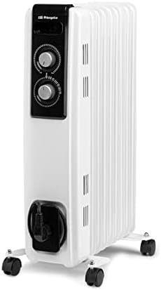
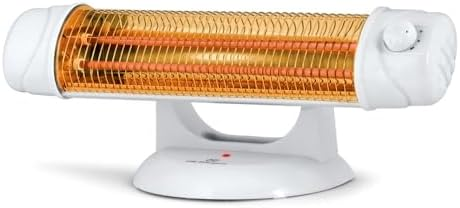

Cómo calentar un piso de alquiler sin hacer obras (5 opciones reales)
Piso de alquiler, sin caldera o con radiadores que el casero no piensa tocar, y la prohibición implícita de taladrar nada. Estas son las cinco opciones que funcionan de verdad, empezando por la más barata.
Calentar un alquiler tiene tres condiciones que no tiene calentar una casa propia: no puedes instalar nada fijo, no sabes si seguirás ahí el invierno que viene, y cualquier cosa que compres tiene que poder irse contigo en una caja. Con eso sobre la mesa, hay más margen del que parece.
Primero: tapa por donde se escapa el calor
Esto no es un consejo de relleno. En un piso antiguo con ventanas de aluminio sin rotura de puente térmico, puedes estar perdiendo por rendijas buena parte de lo que caliente cualquier aparato que compres. Calentar sin tapar es llenar un cubo agujereado.
- Burletes autoadhesivos para el marco de ventanas y puertas: entre 5 y 10 € el rollo, se ponen en diez minutos y se quitan al irte sin dejar marca. Es la mejor relación coste-resultado de toda esta lista.
- Burlete bajo puerta (el de tubo de tela o el de doble cepillo): otros 8-12 €. La rendija bajo la puerta de entrada es por donde entra el aire frío del rellano.
- El cajón de la persiana es el agujero que nadie mira. Si notas corriente al acercar la mano, un kit de aislamiento de espuma cuesta unos 15 € y se coloca sin obra.
- Cortinas térmicas: una cortina gruesa con forro aislante, bien puesta hasta el suelo y cerrada al caer la tarde, reduce de forma apreciable la sensación de pared fría junto a la ventana. Entre 25 y 50 €.
- Una alfombra en la zona donde te sientas. En bajos y primeras plantas, el suelo frío cambia por completo la sensación térmica de la habitación.
Con 40 o 50 € en total tienes el piso sellado, y esa inversión se nota en todo lo que venga después.
1. Calefactor cerámico portátil
Es la opción por defecto y hay razones: pesa menos de dos kilos, cuesta entre 30 y 50 €, calienta en tres minutos y te lo llevas de una habitación a otra según dónde estés.
Funciona bien con una lógica concreta: no calentar la casa, calentarte a ti. En vez de intentar poner el piso entero a 21 °C, enciendes el cerámico en la habitación donde estás y lo apagas al salir. En un alquiler con mal aislamiento, calentar todo es una batalla perdida.
El Pro Breeze Mini Cerámico 2000W (37,99 €) es el ejemplo típico: 1,8 kg, oscilación, termostato y suficiente para un dormitorio o un estudio de hasta 18 m². Si el presupuesto es aún más justo, el Jata TC73 baja a 31,90 € con 1200 W, pensado para espacios pequeños como el baño o el escritorio. Los dos están en Amazon: Pro Breeze Mini y Jata TC73.
El pero: hace ruido de ventilador y el calor se va en cuanto lo apagas. Para dos horas está perfecto; para una tarde entera, cansa.

2. Radiador de aceite con ruedas
Si pasas tardes largas en casa —teletrabajo, estudio, salón por la noche—, el radiador de aceite es el que mejor se porta. No hace ningún ruido, no reseca el ambiente y mantiene la temperatura estable en vez de dar golpes de aire caliente.
El Orbegozo RF 2000 cuesta 60,30 €, tiene 2000 W repartidos en nueve elementos, termostato y ruedas para moverlo entre habitaciones. Para un alquiler es una compra sensata: no requiere instalación, se lleva de piso en piso y cuesta la mitad que los modelos de marca premium (verlo en Amazon).
El pero: pesa 10,5 kg y tarda unos veinte minutos en empezar a notarse. No es el aparato para "entrar al baño y no congelarse".
3. Emisor térmico o panel
Los emisores térmicos y los paneles convectores son la opción más parecida a tener calefacción de verdad. Muchos están pensados para colgarse en la pared, pero —y esto es lo importante para un alquiler— la mayoría vienen con patas o ruedas para usarlos sin taladrar nada.
El Orbegozo RRE 1310 (158,50 €) es un emisor de 1300 W con siete elementos de aluminio, silencioso y con termostato, que se puede dejar fijo en un dormitorio sobre sus ruedas. Calienta más rápido que un radiador de aceite y se puede programar para que mantenga una temperatura constante (verlo en Amazon).
Si lo que buscas es que se vea bien, el Cecotec Ready Warm 6650 Crystal Connection (79,90 €) es un panel de cristal templado con wifi y mando, que funciona en pared o de pie con las patas incluidas. Son 1000 W: suficiente para un dormitorio de 15 m², no para un salón (verlo en Amazon).
El pero: más caro que un cerámico y, en el caso de los emisores, más difícil de guardar cuando llega el buen tiempo.
4. Manta eléctrica o calientacamas
La opción menos glamurosa y la que más dinero ahorra. Una manta eléctrica consume entre 60 y 120 W; un calefactor, 2000 W. Es decir: veinte veces menos.
Para dormir no hay comparación posible. Calentar un dormitorio entero ocho horas para que estén calientes dos metros cuadrados de cama no tiene sentido económico. Con un calientacamas encendido media hora antes de acostarte, entras en una cama templada y ya puedes apagar el calefactor.
Lo mismo vale para el sofá: una manta eléctrica de sobremesa mientras ves la tele resuelve el frío de las piernas, que es donde más se nota, por unos céntimos la tarde.
Cuestan entre 25 y 60 € y cualquiera con apagado automático y varios niveles de temperatura cumple.
5. Estufa de cuarzo para calor puntual
Las estufas de cuarzo o halógenas no calientan el aire: emiten calor radiante, como el sol. Notas el calor solo donde apuntan, y lo notas al instante, sin esperar.
Eso las hace malas para calentar una habitación y muy buenas para un uso concreto: debajo del escritorio, al lado del sofá o en el baño mientras te vistes. El Orbegozo BP 5003 cuesta 19,98 €, pesa 1,7 kg y no hace ruido alguno (verlo en Amazon).
El pero: no tiene termostato, así que consume sus 1200 W todo el rato que esté encendida, y el calor es direccional. Es un complemento, no una solución de calefacción.
Cuánto cuesta cada opción al día
Con una referencia de 0,18 €/kWh, así quedan las cuentas de un uso normal:
- Manta eléctrica, 100 W durante 8 horas: 0,8 kWh, unos 14 céntimos por noche.
- Estufa de cuarzo, 1200 W durante 2 horas: 2,4 kWh, unos 43 céntimos.
- Cerámico, 2000 W durante 3 horas con termostato cortando aproximadamente la mitad del tiempo: unos 54 céntimos.
- Radiador de aceite, 2000 W durante 5 horas, encendido en torno al 60 % del tiempo: 6 kWh, algo más de 1 €.
Son cifras orientativas —dependen de tu tarifa, del tamaño de la habitación y de lo aislada que esté—, pero el orden de magnitud sirve: la diferencia entre calentar a una persona y calentar una habitación es de casi diez a uno.
Lo que no conviene hacer
- Estufas de gas butano en pisos pequeños sin ventilar. Generan mucho vapor de agua —un cartucho suelta más de un litro— y ese vapor acaba en las paredes en forma de condensación y moho. Además necesitan ventilación permanente por seguridad.
- Conectar un calefactor a un ladrón o a un alargador fino. Dos mil vatios son casi nueve amperios: un alargador de los baratos se calienta de verdad. Enchufe de pared, siempre.
- Secar ropa encima de un radiador de aceite. Tentador, prohibido por todos los fabricantes, y encima devuelve al aire toda la humedad de la colada.
- Dejar cualquier calefactor encendido mientras duermes si no tiene termostato ni temporizador.
Cómo lo montaría yo en un piso de alquiler
Con 150 € bien repartidos se pasa un invierno decente: burletes y cortina térmica para sellar (unos 50 €), un cerámico para calor inmediato donde haga falta (unos 38 €) y un calientacamas para las noches (unos 40 €). Si teletrabajas y pasas la tarde entera en casa, cambia el cerámico por un radiador de aceite de 60 € y usa el cerámico solo para el baño.
Todo eso cabe en una caja el día que te mudes, y ninguna pared se entera.
Productos mencionados en esta guía
Pro Breeze Mini Calefactor Cerámico 2000W
37,99 €
Orbegozo RF 2000 Radiador de Aceite
60,30 €
Orbegozo BP 5003
19,98 €Precios orientativos, consultados en Amazon. Pueden cambiar en cualquier momento.